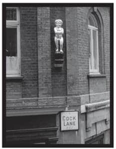
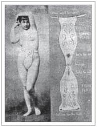
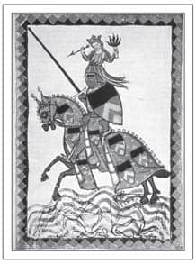
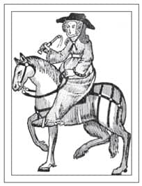

YATAKLAR, PEZEVENKLER, OZANLAR
Tanrım, bana iffet ve haysiyet ver – ama henüz erken.
Aziz Augustinus
(Hıristiyanlığa dönmeden önce)
Ortaçağ gelirken beraberinde kurallar ve kısıtlamaları da getirdi. Seks, her şeyin makbul olduğu klasik dönemde gayet ölçüsüzce yapılabilirken, Ortaçağ’da ahlaksız bir davranış haline geldi. Bu durumun sorumlularından biri de Aziz Augustinus’tu. Hedonist ve keyfine düşkün bir gençlik geçirdikten sonra Augustinus, M.S. 387’de Hıristiyanlığa geçmiş en etkili ilahiyatçılardan biri olmuştur. Yazdıklarıyla Batı Hıristiyanlığı ve felsefesinin geleceğini etkilemiş, her şeyden öte ‘ilk günah’ kavramını ortaya atmıştır. Katı kurallarıyla adeta dinin kaderini belirlemiştir. Büyük bir çağın sonunda temelleri atılan bu kurallar, bir sonraki çağın doğuşunda belirleyici rol üstlenmiştir. İnsanlar suçluluğu ve suçluluktan zevk almayı öğrenmiştir.
Aziz Augustinus’un en temel görüşü seksin sadece evlilik içinde kabul edilebildiğiydi ve üremek için, zevk almaksızın yapılması gerektiğiydi. Mastürbasyon, oral ya da anal seks, ön sevişme ve misyoner pozisyonu hariç herhangi bir pozisyon yasaktı. Birçok rahibin neyin günah olup neyin olmadığını, hangi uygulamalardan uzak durulması gerektiğini uzun ve gerçekten tuhaf listelerle belirlemiş olması, ya pek az insanın bu kurallara uyduğunu, ya da yazarların çılgın bir hayalgücü olduğunu gösterir. Eğer zevk bir günahsa, çoğunluk günahkardı.
Zaruri Günah
Ortaçağ’da Kilise aslında göründüğünden çok daha çıkarcıydı ve gerçekte olup bitenlere sıklıkla göz yumardı. Mesela fuhuş cezalandırılabilir bir suç olmasına rağmen, zaruri bir günah olarak sayılıp es geçilirdi.
Aziz Augustinus ‘Toplumdan fahişeleri yok ederseniz her şeyi şehvetle kirletmiş olursunuz.’ demiştir. Aziz Thomas da bu görüşe katılmış ve şu benzetmeyi yapmıştır: ‘Kentlerdeki fuhuş, saraydaki lağım çukuruna benzer; lağım çukurunu kaldırırsanız, saray, pis bir yer haline gelir… Fahişeleri yok ederseniz dünyayı sodomiyle6 doldurursunuz.” (O zamanlar anal seks, hayvanlarla cinsel ilişki ya da genel ahlaksızlığın herhangi bir türü ‘sodomi’ sayılıyordu.)
Fahişeler olmazsa ‘saygın’ eş ve kızların tehlike altında kalacağına dair genel bir korku vardı. On üçüncü yüzyıl Fransa’sında inançlı Kral IX. Louis genelevleri kapatmaya çalıştığında, halk Paris sokaklarının artık güvenli olmadığı gerekçesiyle sokaklara dökülmüştü. Venedik’teyse fahişelerin toplumun neredeyse yüzde dördünü oluşturduğu söyleniyordu.
Kilise’nin cinsel suçlar listesinde zina, ensest ve eşcinselliğe kıyasla fuhuş daha önemsiz bir günahtı. Doğum kontrol yöntemleriyse listede üst sıralarda yer alıyordu. Kadınlar kolayca kandırılabildikleri gerekçesiyle tamamen suçlu bulunmuyor ve Magadalalı Meryem’in hikayesini de örnek göstererek kendilerini affettirebiliyorlardı.
Londra’nın Kerhaneleri
İngiltere’de fuhuşun kilise tarafından önlenemeyişi, devlet tarafından kabullenilmesinin yolunu açmıştır. Londra’da adı halk arasında ‘stews’ (kerhane) olarak geçen birtakım hususi genelevler ve Roma’dakilere benzer hamamlar bulunurdu. 1161’de Kral II. Henry, bir genelev mahallesi kurulmasının yolunu açan ve genelevleri gelecek dört yüzyıl boyunca Winchester Piskoposu’nun yönetimi altına sokan Southwark Kerhane İşletmecileri İdaresi Fermanı’nı yayınlatmıştı.
İdare altına alınmış genelevler Southwark’ın icra memurları ve diğer yetkilileri tarafından senede dört kere teftiş edilirdi. Henry’nin fermanı, kerhaneleri eğlenmek için gidilen herhangi bir mekan gibi kabul etmiş ve esas olarak kerhane sahiplerinin çalışan kızlardan kira haricinde başka bir kazanç sağlamamasını ve diğerlerini fuhuşa sürüklememesini hedeflemiştir.
Kurallar
Kızların istedikleri zaman burada çalışmaya başlayıp istedikleri zaman ayrılmalarına izin verilirdi. Kerhane sahiplerinin onlarla iletişime girmemeleri ve daha sonra baskı altına alabilmelerini engellemek için katiyen borç para vermemeleri gerekirdi. Bu kerhaneler aslına bakılırsa daha çok misafirhane gibi kullanılan, yiyecek, içecek ve alkol de satılamadığı için pek de canlı olmayan mekanlardı.
Parlamento oturum halindeyken çalışan fahişeler cezalandırılırdı. Bu uygulamanın, vekillerin Bankside’daki genelevlerden çıkamayıp Westminster’daki oturuma katılmamalarını engellemek için olup olmadığı yoruma açıktır.
Taş atan ve yoldan geçenlere dil çıkaranların para cezası alması gibi tuhaf kurallar da konmuştu. Bahsedilen miktarlar oldukça küçüktü, ancak mahkeme kayıtlarından anlaşıldığı kadarıyla bu tür suçlar sıklıkla işleniyordu. Ayrıca bu kadınların normal ev kadınlarından ayırdedilebilmeleri için önlük giymeleri yasaklanmıştı.
Fahişelerin son müşterileriyle tüm geceyi geçirmek gibi bir zorunlulukları vardı. Bu kuralın ve kerhane işletmecilerinin kendi tekneleri olamaması gibi yasakların nehir trafiğinin geceleri izinsiz olarak akmasını önlemek için konulduğu düşünülmektedir.
II. Henry
Gün geldi, Henry, Fransa’daki askeri çıkarmaları için paraya ihtiyaç duydu. Bütün Avrupa ülkeleri ‘putage’ adı verilen, fahişelere uygulanan bir tür vergi topluyordu, ancak bu vergi İngiltere’de tutmayacağı için kurnaz kral, Winchester Piskoposu’na ‘dini ıslah’ı sağlaması karşılığında Southwark’taki kraliyet arsasından on altı parça mülk vermişti. Gerekli kanunu yasayamayan Piskopos krala başvurunca Henry memnuniyetle aracı olmuş ve gayrımeşru yollardan elde edilen bir vergi haline gelen cezalar toplamaya başlamıştı.
Düşük miktarda birçok ceza uydurulmuş, yüksek para cezaları da fahişelerdense daha çok kerhane patronlarına uygulanmıştır.
Utanç Tıraşı
14. Yüzyıl’da, pezevenklikle suçlanan birinin sakalı ve saçı beş santimlik bir perçem haricinde tıraş edilirdi. Suçlu şehrin büyükleri ya da belediye başkanı tarafından belirlenen bir süre boyunca halkın önünde teşhir edilirdi. Olaya herkesin tanıklık edebilmesi içinse yolda suçluya neşeli halk ozanlarından oluşan bir bando eşlik ederdi.
Mamalar ve kadın tellalları da aynı şekilde cezalandırılır, saçları bir kase şeklinde kesilirdi. Hapishaneden ceza yerine kadar ozanların şarkıları eşliğinde geçirdikleri yolculukları yine aynı şekilde halka açık ve gürültülü patırtılıydı.
Cock7 Yolu ve Diğer Sokaklar

Cock Yolu’ndaki Altın Oğlan heykeli Büyük Londra Yangını’nın bittiği noktayı belirler
Bankside (Thames Nehri kıyısı) bölgesindeki genelevlerin sayısını kısıtlama çabalarına rağmen, Londra’nın birçok semtinde ve diğer şehirlerde fuhuş oranı artmıştı. Sokak isimleri buna şahittir, zira ortaçağ sokaklarının çoğu buralarda yapılan ticarete istinaden adlandırılmıştır.
13. Yüzyıl sonlarında çoğu şehirde rastlanan Gropecunt (Am elleyen) Geçidi, Cock’s Lane’de (Yarrak Yolu), Codpiece Lane (Apışarası Yolu) ya da Maiden Lane (Kız Yolu) gibi bölgelerde neler döndüğünü tahmin etmek çok da zor değildir. Elbette bu yerlere verilen isimler parlak zeka ürünüdür. Bazı şehirlerdeki Gropecunt Geçidi daha sonradan Grape Lane (Üzüm Geçidi) olarak yeniden adlandırılmış, Londra’da ise bugün birçok yayınevi ve gazeteye ev sahipliği yapan Grub Street (Grub Sokağı) olmuştur; Cock’s Lane ise çoğunlukla Cook’s Lane diye değiştirilmiştir. Paris’te de cüretkarlıkta Londra’yla aşık atan Rue Trousse Puteyne (Fahişenin Yarığı Sokağı) ve şimdi Rue de Pélécan adıyla anılan Rue du Poil au Con (Am Kılı Sokağı) gibi sokak isimlerine rastlanmıştır.
Bakire Gibi
Dönemin ilahiyatçıları, günah çıkaranları dinleyen rahiplere kılavuzluk etmesi amacıyla bir dizi pişmanlık ilahisi oluşturmuştu. Bu, esasen basit bir günah çıkarmak ve affedilmek için uygulanması vacip olan cezaların listesiydi. Ortaçağ’ın başlarında genel olarak birkaç gün dua ederek ve oruç tutarak ceza çekilmiş olurdu, ancak günahın ağırlığına göre bu ceza, seneler boyunca kutsal günlerde oruç tutulmasını gerektirebilirdi. Örneğin karısıyla bir pazar günü seks yapan bir adam dört gün boyunca sadece su ve ekmekle beslenmek zorundaydı. Sonraları, işlenen günahlar için af, yahut ‘endüljans’ (müsamaha) kağıdı, seyyar Afçılardan (Pardoner) ya da diğer kilise adamlarından satın alınabilir hale geldi, böylelikle günah ve affın yükü de midenin üzerinden kalkmış oldu.
Bu katı ‘arkana yaslan ve İngiltere’yi düşün’ mesajı Ortaçağ doktorlarının görüşlerine pek de uymuyordu. Siz kadın orgazmını 1960’ların cinsel devriminin bir bulgusu sanadurun, Ortaçağ’da döllenmenin hem kadın hem erkek orgazma ulaşmadan imkansız olduğuna inanılır, ancak bunun için gereken koşulların yoldan çıkarıcı olduğu düşünülürdü.
Ta M.Ö. 4. Yüzyıl’da bile, Hipokrat ve Galen gibi klasik çağ doktorları, orgazm olan kadınların erkekler gibi meni ürettiği ve kadının hamile kalması için her iki tür meninin de gerekli olduğu kanısındaydılar. 11. Yüzyılda İbn-i Sina’dan ve 13. Yüzyıl’da Albertus Magnus’tan kalma yazılar onların da bu konuda hemfikir olduğunu gösterir. Aslına bakılırsa, bu kanı Victoria çağındaki anatomi çalışmaları tarafından çürütülünceye kadar sürmüştür.
İdeal olan elbette ki uygun davranışlarla kur yapılan ve babasının rızasıyla alınan bakire bir gelindi. Bu oldukça ciddiye alınan bir konuydu, zira söz konusu olan sadece namus değil, aynı zamanda kaybedilebilecek bir başlık parasıydı.
Yine klasik dönem doktorlarını takiben İbn-i Sina ve (1931 yılında aziz ilan edilen) Albertus Magnus ayrıntılarıyla ‘bekaret ve kaybının belirtileri’ni sıralamış, böylelikle bekaretini ‘tamir ettirmek’ isteyen kişilere kılavuzluk etmişlerdir.
Astrenjan çözeltileri şırınga yordamıyla zerk etmenin, vajinal bölgeyi bütün şüpheleri yok edecek derecede sıkılaştıracağı söylenirdi. Kanama belirtilerini taklit etmek içinse kana bulanmış ufak bir sünger parçası ya da kanla doldurulmuş balık mesanesinin vajinanın içine yerleştirilmesi önerilirdi.
Başına Buyruk Kadınlar
1066’da İngiltere’ye yapılan Norman İşgali’nden sonra, Fatih William ve şövalyeleri, hakimiyetlerini sürdürmek ve çıkabilecek herhangi bir ayaklanmayı durdurmak için savaşmaya devam ediyorlardı. Normandiya’da bıraktıkları karılarıysa evlerinin rahatlığından yoksun bu vasat ama iş görür ülkeye gitmek için kanalı geçmeyi göze almıyor, yine de kocalarının fiziksel yakınlığını özlüyorlardı. Birçoğu, kocaları derhal eve gelmezse yataklarına bir sevgili almak zorunda kalacaklarına dair kesin koşullar koyan tehditler göndermişti.
William ödül olarak toprak ve unvan vaat ederek ordusunu İngiltere’de tutmaya çalışmıştır. Bir kısmı kalmış, ancak çoğu gitmiştir. Bunların arasında, Hastings Kalesi’ni bırakan Onfroy du Tilleul ve Winchester valiliğini feda eden kayınbiraderi Hugh de Grandmesnil de vardır. Ne onlar ne de varisleri arkalarında bıraktıkları toprakları ya da unvanları geri kazanabilmiştir.
Ordugah Takipçileri
1096’da Papa II. Urban, Kudüs’ü geri almak için Birinci Haçlı Seferi’ni ilan ettiğinde, kadınlar yolculuk ve zorlu yaşam koşullarına daha sıcak bakmıştır. Birçoğu Haçlılara aşçı, çamaşırcı, temizlikçi ve bilhassa fahişe olarak katılmıştır. Seyyah olarak katılan birçok kadın birilerine muamele çekmenin kendilerini bu uzun yolculukta geçindirmek için en iyi yol olduğunu düşünmüştür. Belki de Haçlıları, kafirlere karşı giriştikleri bu kutsal savaşta desteklemeyi kendilerine bir görev bilmişlerdir; yol üzerinde meslek değiştirmeye karar verenlerin birçoğu elbette ki yolculuğun başında topluluğa rahibe olarak katılmış olanlardır.
Kral I. Richard, ya da diğer adıyla Arslan Yürekli Rişar, birliklerini savaş boyunca hedefe kitlenmeye zorlamış ve kadınlara çok fazla para döktükleri için askerlerine kızmıştır. Birinci Haçlı Seferi’nin sonuna doğru, Papa II. Clement kadınları, özellikle çekici genç kadınları orduya eşlik etmekten alıkoyan bir kararname yayınlamıştır.
Bu sırada, evde tek başına bırakılmış kadınlar da Kilise için başka bir ahlaki ikilem arz ediyordu. Bu durumun vahameti anlaşılır anlaşılmaz Papa II. Urban Haçlıların yolculuğa çıkmasından kısa bir süre sonra bir mektup yazmış, evli erkeklere Kutsal Topraklara gitmeden karılarının rızasını almalarını tavsiye etmiştir.
Zorla Bekaret

Metalden bir bekaret kemeri
Ortaçağ mizahının ve alayının merkezinde olan bekaret kemerleri ilk defa 14. Yüzyıl’da, Floransa kuşağı adıyla çıkmıştır. Oysaki bu kemerlerin İtalya’da icat edildiği şüphelidir; aslında bu frenginin İngiltere’de Fransız hastalığı, Fransa’da İngiliz hastalığı olarak bilinmesi hikayesine benzer. Kemerlerin yedek anahtarlarına dair şakalar da aynı zamanlarda çıkmıştır. 1930’lara kadar tıbbi cihazlar kataloglarında bekaret kemerleri de yerlerini almıştır.
13. Yüzyıl’ın sonlarından itibaren, günümüze kadar gelmiş dava kayıtlarının gittikçe artan bir kısmı seks ve evlilik, zina, aldatma ve fuhuşla ilgilidir. Davaların yüzde altmışı ile doksanı, takip eden üç yüzyıl boyunca bu konuların çevresinde dönmeye devam etmiştir. Cezalar çeşitlidir, ancak çoğu zaman toplum içinde aşağılanma ve dayak yemeye başvurulmuş, kadınlaraysa kimi zaman fakirlere sadaka verme yahut kutsal yolculuğa çıkma cezası verilmiştir. Bu, suçluya günahları üzerinde düşünmek için bir süre tanımaya benzese de, esasen aynı suçun daha sıklıkla işlenmesine fırsat vermiştir.
Ölmeden Önce Mürevvet
Arzuları söndürmek bir yana, veba salgını ve özellikle 1347-51 arası nüfusun üçte birinin canını alan ve Avrupa’yı mahveden Büyük Veba Salgını (Kara Ölüm), ateşe adeta körükle gitmiştir. Bir çıkarcılık ruhu halkı sarıp sarmalamış ve hastalığı daha fazla yayacak olmasına rağmen meyhaneler ve genelevler daha da çok insanla dolup taşmıştı.
Ticaret canlanmıştı, zira birçok insan cinsel birleşmenin, özellikle bir fahişeyle seks yapmanın kişiyi hastalıktan koruduğuna inanıyordu. Ayrıca dul kadınlarla ve ölmeden önce mürüvvetlerini görmek isteyen kimselerle yangından mal kaçırır gibi evlenmek de revaçtaydı.
Saray Aşkları
Genelevler ve pezevenklerle birlikte, artık yaygınlığını kaybeden ‘saray aşkı’ kavramı da giderek gelişiyordu. Ortaçağ’ın başlarında, kadınlar baştan çıkarıcı addedilir, insanlığın cennetten kovuluşunun sebebi Havva Ana sayılırdı. Ancak seyyahlar ve Haçlılar, Bizans’tan dönerken, insanla Tanrı’nın aracısı olan, kadınlık ve cinsellik bakımından en üstün seviyedeki, annelerin en yücesi Meryem Ana’ya bağlılık geleneğini de beraberlerinde getirmişlerdir.
Bu gelenek, saray aşkalarının yahut ince ruhlu bir aşk idealinin, Güney Fransa ozanlarının şiir ve şarkılarına girmesine yol açmıştır. 1100 ile 1350 arasında değişik saraylara bağlı ozanlar türemiştir. 12. Yüzyıl’dan önce aşk edebiyatına dair bir gelenek olmasa da İspanya ve Sicilya’ya giden ziyaretçiler burada duydukları Arapça aşk şiirleri ve felsefesinden etkilenmeye başlamışlardır.
‘Soylulaştıran aşk’ teması Poitiers Kontu ve Aquitaine Dükü Guilhem’in şiirlerinde görülmeye başlamış, bu gelenek daha sonra Guilhem’in torunu Aquitaine’li Eleanor gibi güçlü asiller tarafından da sürdürülmüştür. Eleanor ve kızı Champagne’li Marie 12. Yüzyıl’ın sonunda Poitiers kentinde, kadınlar tarafından idare edilen bir saray kurmuşlardır. Saraylılara nasıl davranacaklarını öğreten, Marie’nin papazı Andreas Capellanus tarafından konulan bir kurallar dizisi yayınlatmışlardır. Saray aşkı ulaşılamaz, idealize edilmiş bir kadın için duyulan şehvani bir aşktır; ancak özünde saftır, dolayısıyla fiziksel birleşmeyi yasaklar; arzuyu kıvılcımlandıran bütün endişeler, tutkular ve kıskançlık fiziksel bir boşalmaya ulaşamaz. En azından teoride böyleydi. Bu kurallar, Kilise’nin yetkisinin ceza vermeye daha elverişli olduğu Kuzey Avrupa’da daha fazla uygulanıyor olmalıydı. Güneyin sıcak iklimleriyle birlikte çiftlerin yanına daha çok şey kâr kalıyordu.
Sadık Bir Şövalyenin Öyküsü

Ulric von Liechtenstein
Ulric von Liechtenstein şövalyelik kavramının somut bir örneğidir. 13. Yüzyıl’da günümüzün Avusturya’sında olan Styria Dükalığı’ndan gelen soylu bir şövalye olan von Liechtenstein, şövalyelerin ve asillerin nasıl daha erdemli bir hayat sürebileceği hakkında bolca yazmıştır. Daha çok namuslu bir saray aşkı çerçevesinde evli soylu kadınlara verdiği onur hizmetlerini anlatan, otobiyografik bir şiir seçkisi olan Service of Ladies (Hanımlara Hizmet) eseri ile tanınır.
Tanrıça Venüs kostümü giyip Venedik’ten Viyana’ya seyahat etmiştir. Süslü elbiseler giyip, kurdeleler ve mücevherler takınarak diğer şövalyelerle seçtiği kadın uğruna atışmış, 307 mızrak dövüşü kazanmış ve bütün rakiplerini yenmiştir. Âşık olduğu kadın, saray aşkına yaraşır bir şekilde onu küçümsemeye devam etmiş, daha fazla başarı ve hatta kan görmek istemiştir. Bunun üstüne Liechtenstein âşık olduğu kadına altın kancalı kadife bir kutu içinde serçe parmağını sunmuştur. Her nedense, bu davranış da etkileyici olmamıştır. Şövalyemiz bunun üzerine daha erkeksi olan Kral Arthur kılığına girip ikinci yolculuğuna çıkmış, ülkeyi baştan sona gezerek turnuvalara katılmıştır.
Ozan’dan Masallar

Bath’lı Kadın
Gutenberg 1440 civarında matbaayı icat ettiği zamanlarda, halkın en fazla üçte biri okuma yazma biliyordu. O zamana kadar, kitaplar büyük bir zahmetle elle kopyalanıyordu. Zamanın yazarlarının günümüze az sayılarda ulaşan kurgusal eserlerinden insanların nasıl olduğuna dair değerli bilgiler ediniyoruz. O dönemin insanlarını gözlemlemek için en iyi kitaplardan biriyse Chaucer’in Canterbury Masallarıdır. Chaucer önce Kral III. Edward, sonra II. Richard için çalışan bir bürokrat, diplomat ve saraylı olarak çıktığı yolculuklarda tanıştığı gerçek insanların hikayelerinden esinlenmiştir. Hacılarının anlattığı hikayeler kimi zaman da bütün Avrupa’da bilinen hikayelerden alınmıştır; neredeyse her hikaye bir öğütle biter.
Chaucer’in hacıları her yaştan ve her kesimden gelir ve farklı sebeplerle yolculuk ediyor olurlar; çoğunlukla da ruhani ya da dini bir tutkuyla alakası olmayan sebeplerle. Yolculuklarına oldukça müphem bir bölge olan Southwark’taki Tabard Hanı’nda başlamaları pek anlamlıdır. Bu grubun içinde, günün din adamlarının genel tutumunu temsil eden birtakım kilise rahibleri de vardır.
Rahibe olan Madame Eglantyne, nazenin ve oldukça seviyeli biri olarak anlatılır. Fransızca bilir, ancak bu dili Londra’nın doğusundaki Stratford Atte Bowe okulunda öğrenmiştir, dolayısıyla Paris Fransızcası hakkında bir fikri yoktur. Chaucer onu ‘duygusal ve yumuşak kalpli’ olarak anlatır, ancak bu iyi yanı sadece şımarık küçük köpeklerine yarar. Ayrıca üzerinde taç giydirilmiş bir ‘A’ harfi olan, Amor vincit omnia -Aşk her şeyin üstadıdır- deyişinin işlenmiş olduğu altından bir broş takması, onun gizli bir âşığı olduğuna işaret eder. Rahipse şişman ve al yanaklıdır, hevesli bir avcıdır, dünyaya modern bir gözle bakar ve avcıların din adamı olamayacağı ya da bir rahibin odasında tek başına fazla vakit geçirmemesi gerektiği gibi düşünceleri umursamaz.
En çok göze çarpan iki karakterse Mübaşir ile Affedici’dir. Mübaşirin işi dinsizleri kilise mahkemelerinin önüne çıkarmaktır ve bu mesleği yapanlar yolsuzluklarıyla tanınır. Chaucer’in Mübaşir’i de istisna değildir ve çıbanlı, sivilceli, gri suratlı, ‘bir karga gibi azgın ve çapkın’, sarımsak ve soğan seven, aşağılık bir insan olarak betimlenmiştir. Çocukların korkulu rüyası olmasına şaşmamak gerek. Chaucer, Mübaşir’in Papa’nın sözde endüljans kağıtlarını satan nahoş Affedici’ye âşık olduğunu açık açık yazar. Affedici ise püskül püskül sarı saçları, tüysüz çenesi ve ince sesiyle öyle bir erkeklik müsveddesidir ki Chaucer onu hadım edilmiş bir beygire benzetir.
Tabii bir de ‘gençlikteki diğer hoş arkadaşları’ ile münasebetleri haricinde beş kere evlenmiş olan Bath’lı kadın vardır; kendisi ayrıca Kudüs’e Haçlılarla seyahat etmiş, buradaki bütün kötü davranışlardan da nasibini almıştır. Dulluğu ona büyük bir özgürlük sağlamıştır, dolayısıyla hikayesi kadınların denetim altında tutulmasıyla ilgilidir. Canterbury’e olan yolculuğunda da kuvvetle muhtemel altıncı kocasını bulmaya çalışıyordur.
Peki ya Chaucer? III. Edward’ın kraliçesi Hainault’lu Philippa’ya hizmet eden Philippa de Roet ile evliydi. Birkaç çocukları vardı ancak bildiğimiz kadarıyla Chaucer ona hiç şiir yazmamıştı. Saraylı aşkının erişilmez nesnesi, büyük ihtimalle Chaucer’in ilk koruyucusu olan Gaunt’lu John’un birinci eşi Lancaster’li Blanche idi. The Book of the Duchess (Düşesin Kitabı), ölümü üzerine Blanche’in şerefine yazılmıştır.
Bir Rönesans Pornocusu
1492’de Arezzo’da doğan Pietro Aretino, zekice izlenimler içeren satirik yazıları ve şiirleriyle dikkate değer bir zenginliğe ve güce ulaşmıştır. Raimondi’nin erotik oymalarındaki on altı pozisyonu anlatan ‘Şehvet Soneleri’ ile toplumsal skandal yarattığı gerekçesiyle Roma’dan sürülmüştür. Bu, pornografik bir metinle görüntünün birleştirildiği eserlere ilk örnektir ve günümüze kadar ulaşmış bir iki parça bugün British Museum’da sergilenmektedir.
Aretino’nun edebi dalkavukluğu ile şantajcılığı Venedik’te Büyük Kanal’ın üstünde birçok erkek ve kadınla paylaştığı bir konakta kalmasını sağlamıştır. Zevk-ü sefa içinde yaşamış, zevk-ü sefa içinde ölmüştür. Kız kardeşinin anlattığı edepsiz bir fıkraya o kadar gülmüştür ki, son nefesini kimine göre nefessiz kalarak, kimine göreyse sandalyesinden düşüp kafasını kırarak vermiştir.
Aretino, konu cinsel partnerlere gelince erkeklerle kadınlar arasında pek ayrım yapmayan tek kişi değildi. Uygulamaya gelince halk birçok şeye göz yumsa da aslında katı kurallar geçerliydi. Floransalılar 1415’te genç erkekleri eşcinsellikten uzaklaştırmak için heteroseksüel devlet genelevleri kurmuş, Venedik Dükü ise kadınların erkeklerin arzusunu uyandırmak için mümkün olduğunca açık saçık giyinmesini emreden bir bildiri yayınlamıştır.
Bu sırada Fransa’da bu tür ilişkilere ‘İtalyan tarzı’ deniyor ve iş üstünde yakalanıp suçlu bulunan herhangi bir kişi idam cezasına çarptırılabiliyordu.